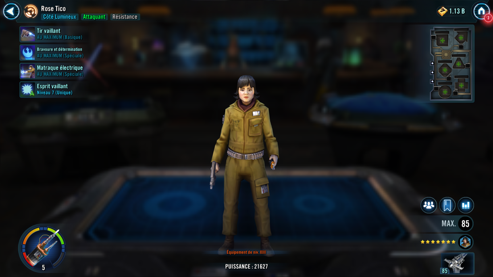
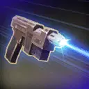
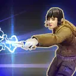
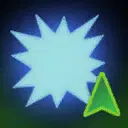

Rose Tico
A brave Resistance Attacker who can Stun and grant allies buffs.
A brave Resistance Attacker who can Stun and grant allies buffs.


Deal Physical damage to target enemy and grant Tenacity Up for 2 turns to a random Resistance ally who doesn't have it. 50% chance to attack again (once per turn).
Resistance allies gain Defense Up for 2 turns. Rose Tico gains 10% Turn Meter for each Resistance ally and each First Order enemy. Remove 8% Turn Meter for each Resistance ally from target enemy. This attack cannot be evaded.

Deal Special damage to target enemy and inflict Stun for 1 turn. When this Stun expires, the target is Dazed for 2 turns, which can't be Evaded or Resisted.

Rose Tico has +10% Offense for each Exposed enemy. When another Resistance ally scores a Critical Hit, Rose Tico gains 10% Turn Meter.
Omicron Boost : While in Grand Arenas: All other Resistance allies also gain 10% Offense for each Exposed enemy, and they gain 5% Turn Meter whenever a Resistance ally scores a critical hit.